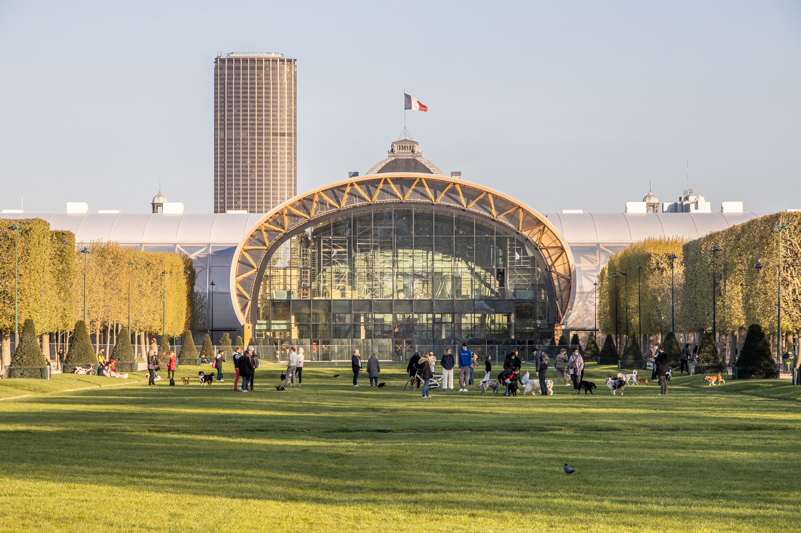
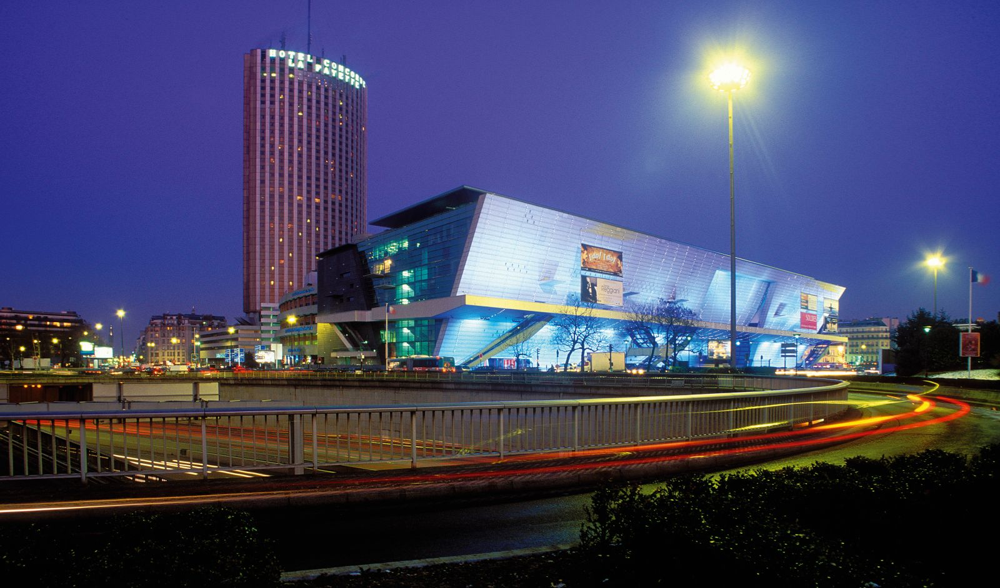
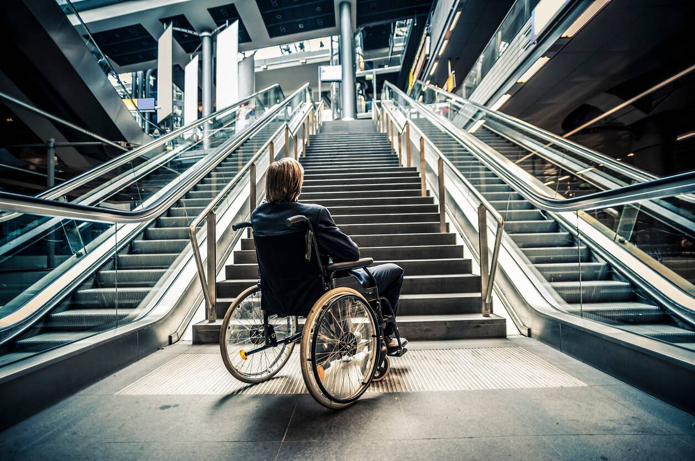

Modernisation
Plutôt que de construire de nouveaux équipements, Paris a choisi de moderniser plusieurs infrastructures déjà présentes sur son territoire. Cette démarche contribue à réduire les coûts de construction tout en évitant l'obsolescence des bâtiments après les Jeux Olympiques.
Le Stade de France, qui accueille les compétitions d’envergure depuis plusieurs années, a été adapté pour répondre aux exigences des Jeux, tout en garantissant sa pérennité pour des événements futurs.
Le Parc des Expositions de la Porte de Versailles et le Palais des Congrès ont également bénéficié de rénovations pour leur permettre de continuer à accueillir des manifestations internationales après les Jeux Olympiques.
Exemple marquant, le Stade Pierre-Mauroy à Lille, bien qu’à l’extérieur de Paris, a été remis à niveau pour les compétitions de football, sans nécessiter la construction de nouvelles infrastructures.
Transformation du Village des Athlètes

Le Village des Athlètes, situé à Saint-Denis, constitue un modèle d’urbanisme durable. Construit avec des matériaux écologiques et équipé de technologies innovantes, il a été pensé dès la conception pour être réutilisé après les Jeux Olympiques.
Une fois l'événement terminé, le village sera transformé en logements abordables et en espaces publics pour les habitants.
Ce projet inclut également des équipements durables tels que des systèmes de gestion d' eaux pluviales, des panneaux solaires, et des espaces verts, garantissant un impact positif sur la qualité de vie des futurs résidents.
Stades Modulaires Réutilisables

Pour éviter l’accumulation de structures inutiles, Paris a opté pour la construction de stades temporaires et modulaires. Cela permet de limiter l’utilisation de ressources, protégeant ainsi l'écosystème et la planète. Ces installations, bien que non permanentes, intègrent une vision durable :
Par exemple, le stade de volleyball de plage, installé sur le Champs de Mars, sera démonté après les Jeux Olympiques. Les matériaux et équipements qui ont été utilisés pourront être reconditionnés ou utilisés pour d’autres projets à venir.
Cette approche garantit une gestion efficace des ressources tout en évitant la prolifération de bâtiments non réutilisables.
Modernisation pour un Héritage Sportif
Les Jeux Olympiques de Paris 2024 ont été l’occasion de remettre aux normes plusieurs infrastructures emblématiques afin qu’elles ne puissent répondre aux exigences des compétitions internationales tout en inscrivant dans un héritage durable. Parmi ces infrastructures, le Stade de France a fait l’objet de rénovations significatives. Ces travaux ont permis d’améliorer les installations pour les athlètes, les spectateurs, et les diffuseurs, tout en intégrant des technologies modernes afin de réduire considérablement son empreinte énergétique.
De même, le Palais des Congrès a été modernisé afin de maintenir sa position de lieu clé pour les conférences, spectacles, et événements internationaux. Ces améliorations incluent une meilleure connectivité numérique, une mise en conformité avec les normes environnementales actuelles, et une optimisation des espaces pour accueillir un plus grand nombre d’événements.
Les travaux sur ces infrastructures ne se limitent pas à répondre aux besoins immédiats des Jeux Olympiques. Ils visent à transformer ces sites en véritables catalyseurs d’activités sportives, culturelles et économiques. Après les Jeux Olympique, ces lieux seront en mesure d'accueillir :
Compétitions sportives majeures, telles que des finales de championnats nationaux ou européens, des événements d’athlétisme, ou des rencontres internationales de football ou bien de rugby.
Grands concerts et spectacles, grâce à des équipements techniques modernes et des espaces repensés pour maximiser la qualité des expériences pour les artistes et le public.
Événements culturels et commerciaux, renforçant ainsi leur rôle dans l’attractivité touristique et économique de la région Île-de-France.
Cette modernisation assure que ces sites continueront de contribuer à la vie dynamique de Paris bien après la fin des Jeux Olympique, devenant ainsi des infrastructures pérennes et multifonctionnelles.
Accessibilité et Inclusion à Long Terme
L’accessibilité et l’inclusion ont été au cœur de la planification des infrastructures des Jeux Olympiques de Paris 2024, avec l’objectif de créer des espaces ou toutes les personnes, indépendamment de leurs capacités physiques ou sensorielles, peuvent participer pleinement à cet événement sportif. Les efforts réalisés dans ce domaine auront un impact durable pour les visiteurs et les usagers après les Jeux Olympiques.
Améliorations des infrastructures physiques
Les sites olympiques ont été conçus ou rénovés pour inclure des aménagements spécifiques tels que :
- Rampes d'accès et ascenseurs adaptés, permettant une circulation fluide des personnes en fauteuil roulant.
- Places réservées dans les gradins offrant une visibilité optimale pour les spectateurs à mobilité réduite, ainsi que des sièges supplémentaires pour leurs accompagnants.
- Signalisations en braille et marquages au sol tactiles pour guider les personnes malvoyantes dans les espaces publics.
Innovations technologiques pour l’inclusion
En complément des adaptations physiques, des technologies ont été mises en place pour faciliter l’accès à l’information et améliorer l’expérience des spectateurs en situation de handicap. Parmi ces initiatives :
- Des applications mobiles proposant des descriptions audio en temps réel pour les compétitions, ainsi que des sous-titres pour les événements diffusés.
- Des boucles magnétiques installées dans les zones réservées pour améliorer l’audition des personnes équipées d’appareils auditifs.
- Des outils numériques permettant de réserver des places accessibles et de planifier des itinéraires sans obstacles entre les différents sites.
Un héritage pour tous
Ces investissements dans l’accessibilité ne disparaîtront pas après les Jeux. Les aménagements resteront en place pour les futurs événements, créant ainsi des espaces inclusifs qui bénéficient à toute la communauté. De plus, l'engagement pour une accessibilité universelle aura un effet d’entraînement, en incitant d'autres villes et organisateurs d'événements à suivre cet exemple.
En résumé, Paris 2024 laisse un héritage non seulement sportif, mais aussi social, en transformant les sites olympiques en modèles de lieux inclusifs et accessibles pour des générations à venir.